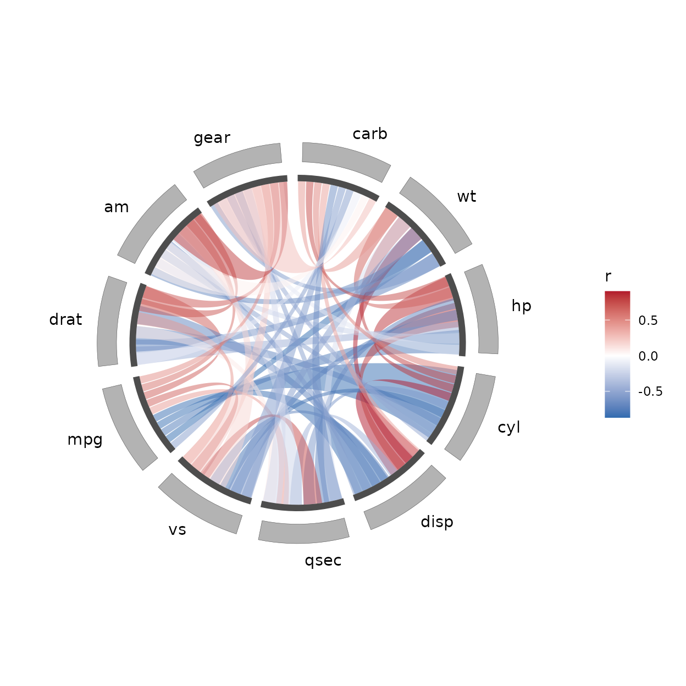
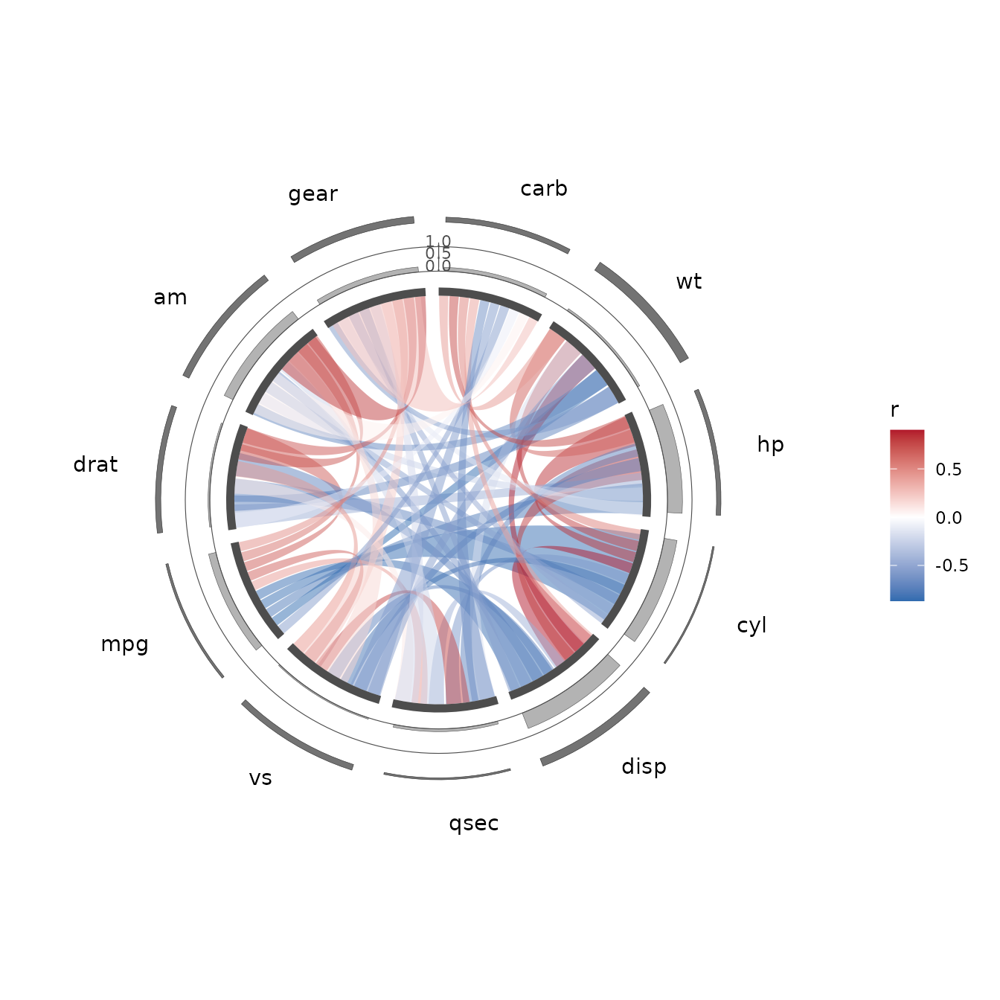
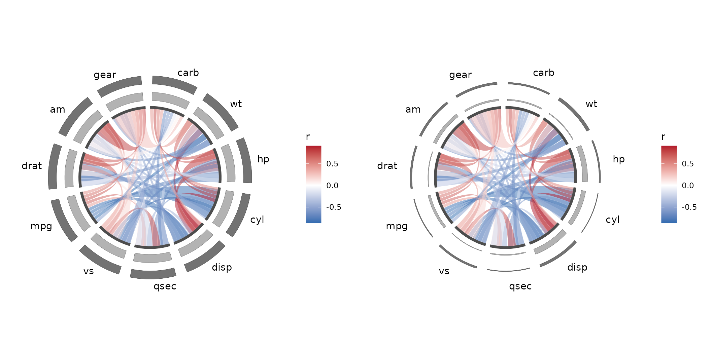
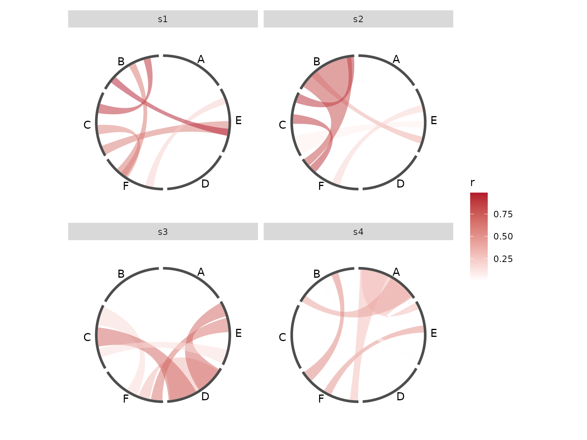
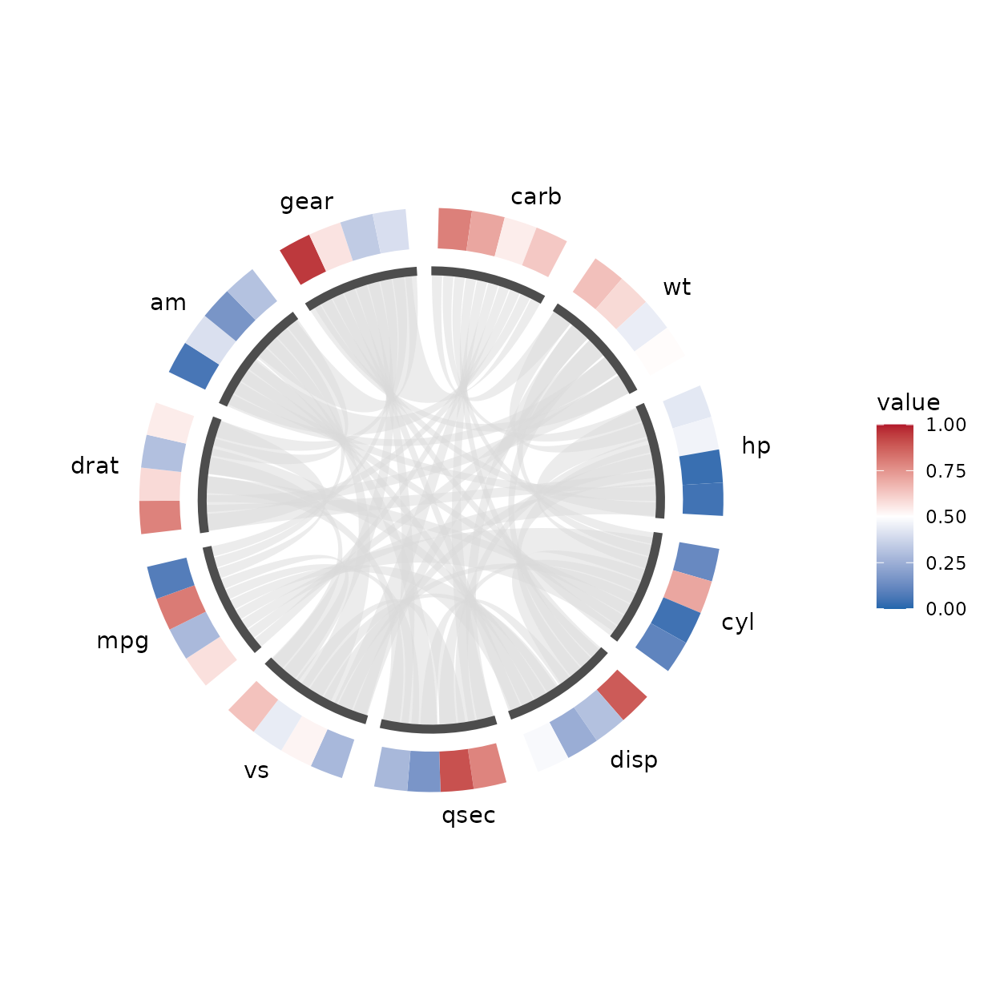
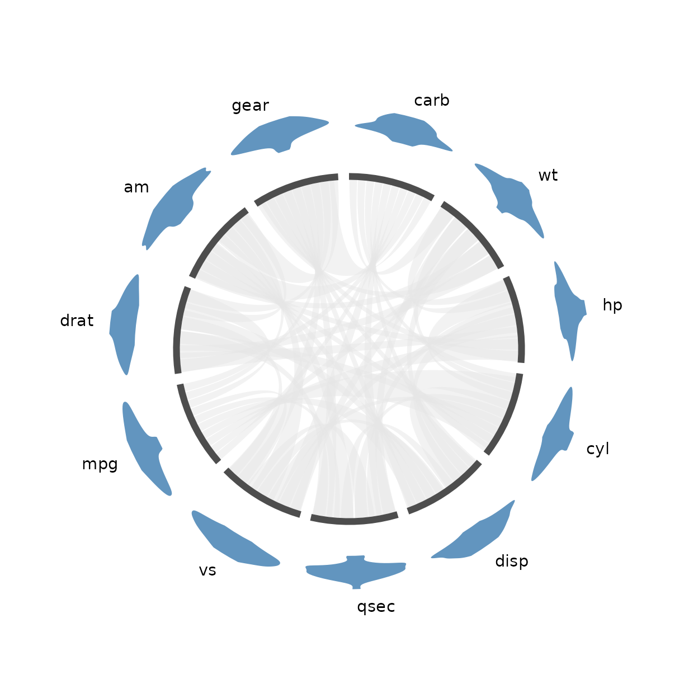
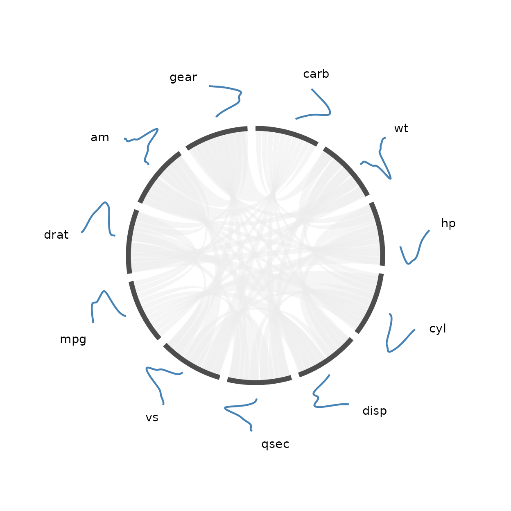
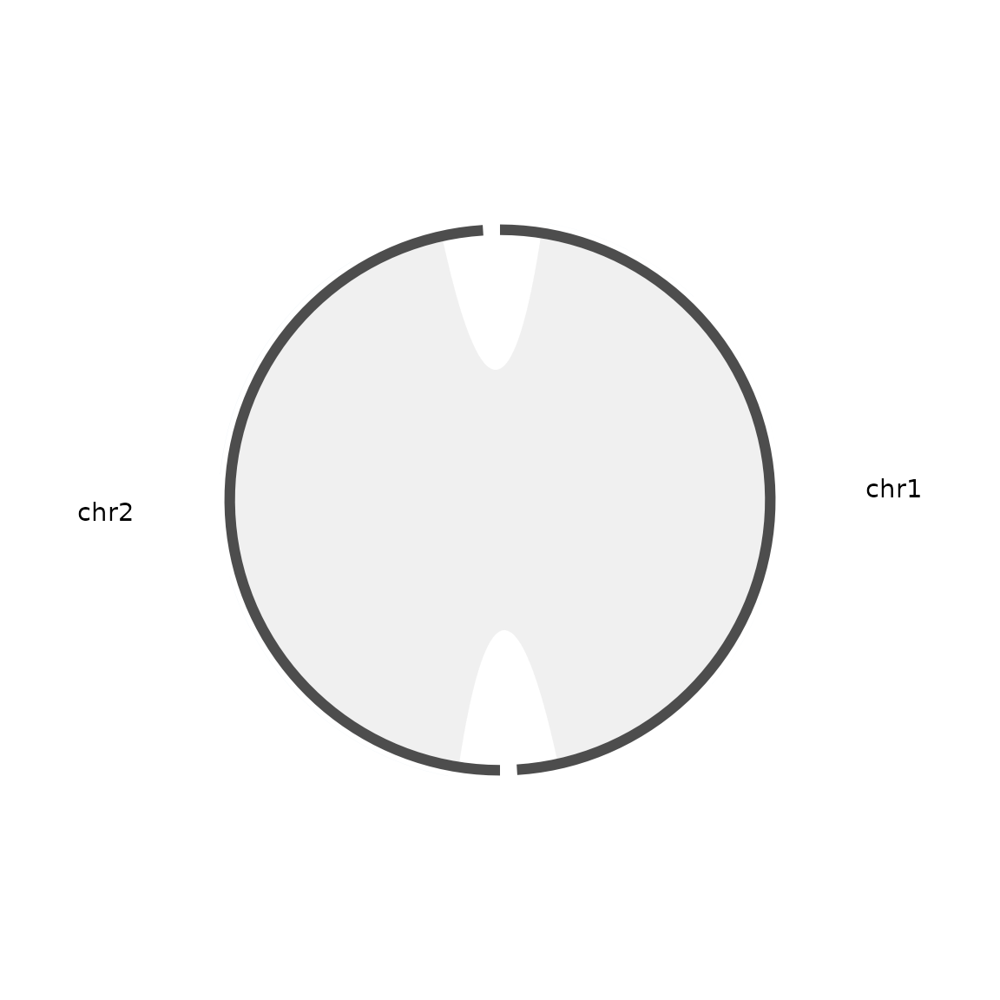
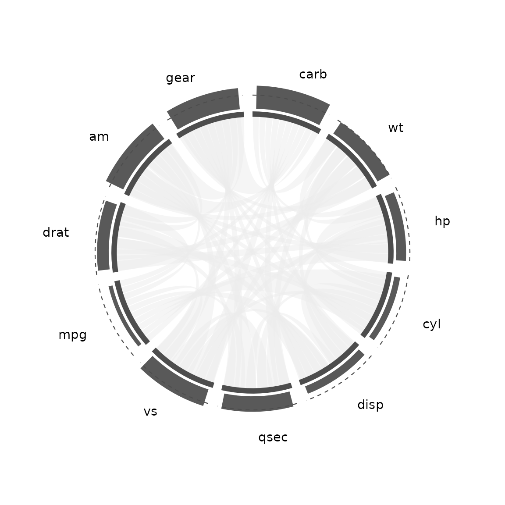

knitr::opts_chunk$set(echo = TRUE, collapse = TRUE, comment = "#>")
library(ggcircos)
library(ggplot2)
set.seed(20260101)What a track is
A track is a radial band drawn just outside the node ring, holding one small plot per node. Every node of the ring gets its own slot in the band, and the value you have for that node decides how far the slot reaches: a column, a bar, an area, a boxplot, a point, a tile or a piece of text.
circlize does this with a second drawing model. Its
canvas is painted directly, so a track is a separate drawing call that
needs its own clipping region, its own scale and its own axis, and the
values have to be normalised by hand against the band’s radii before
they are handed over.
ggcircos keeps the same idea but stores it as data. The
band is declared up front, its radius interval becomes part of the
layout, and normalising a value into that interval is the job of a
position – the same kind of object ggplot2 uses for
geom_bar(). A track is therefore an ordinary ggplot2 layer:
it can be faceted, it can carry a legend, and it obeys the same scales
and themes as everything else on the plot.
Two things follow from that and are worth remembering while reading the rest of this vignette:
- the layout is computed once and never touched again, so a track cannot disagree with the ring it is attached to;
-
ggcircos()adds no layer of its own – a plot without a geom draws nothing.
One track
A track needs three things: a band declared in the layout, a data frame with one value per node, and the name of the column that holds the node ids.
m <- cor(mtcars)
gc <- data.frame(
id = colnames(mtcars),
gc = runif(ncol(mtcars))
)
head(gc)
#> id gc
#> 1 mpg 0.30558863
#> 2 cyl 0.52758693
#> 3 disp 0.67543432
#> 4 hp 0.61028553
#> 5 drat 0.07184271
#> 6 wt 0.09644498The band is declared with tracks, a named vector of
widths measured in radii of the node ring. track_offset is
the gap between the ring and the first band; the default of 0.02 would
put the band right on top of the node arcs, so it is widened here to
leave room for the node labels.
p_one <- ggcircos(
m,
order = "hclust",
tracks = c(gc = 0.12),
track_offset = 0.12
) +
geom_chord(aes(fill = r)) +
geom_track(
data = gc,
aes(x = gc),
node = id,
geom = "col",
band = "gc",
fill = "grey70",
colour = "grey30"
) +
geom_node_arc() +
geom_node_text() +
scale_fill_gradient2(
low = "#2166ac", mid = "white", high = "#b2182b", midpoint = 0
)
p_one
One track: a column per node, drawn in the band declared by
tracks = c(gc = 0.12).
Four parts of that call carry the whole idea:
-
tracks = c(gc = 0.12)declares the band and gives it a name. The name is what a layer refers to later. A band that was never declared is an error:Unknown track "gc". Declared tracks: .... -
band = "gc"says which declared band this layer draws into. It can also be an explicit radius interval,c(r0, r1), for a band that no layer shares. -
node = idis the unquoted name of a column, not a value. The layer reads the ids out of that column and turns them into angles, using the layout. Writingnode = "id"(a string) ornode = gc(the column of values) does not do what it looks like. -
aes(x = gc)maps the value that gets scaled into the band. The scale is applied by the position, not by a ggplot2 axis, which is why the band’s own axis has to be asked for separately (see below).
geom = "col" draws an anchored column: the bar starts at
the inner edge of the band and ends at the scaled value.
"area" and "bar" behave the same way;
"point", "text" and "tile" sit at
a radius instead of growing out of the inner edge.
The band is a plain data frame like everything else, and the layout of the plot can be asked for it:
lay <- circos_layout_of(p_one)
layout_tracks(lay)
#> track width r0 r1
#> 1 gc 0.12 1.12 1.24r0 and r1 are the inner and outer radius of
the band. They are the numbers the position maps values into, and they
are why the same gc value lands at the same radius in every
plot that uses the same layout.
Two tracks and an axis
A second band is declared the same way, and each band gets its own
layer. scales = "fixed" with explicit limits
puts both bands on one scale, so the two tracks can be compared and the
axis can mean something.
depth <- data.frame(
id = colnames(mtcars),
depth = runif(ncol(mtcars), 0.05, 0.40)
)
p_two <- ggcircos(
m,
order = "hclust",
tracks = c(gc = 0.12, depth = 0.12),
track_offset = 0.12
) +
geom_chord(aes(fill = r)) +
geom_track(
data = gc, aes(x = gc), node = id, geom = "col", band = "gc",
scales = "fixed", limits = c(0, 1),
fill = "grey70", colour = "grey30"
) +
geom_track(
data = depth, aes(x = depth), node = id, geom = "col", band = "depth",
scales = "fixed", limits = c(0, 1),
fill = "grey45", colour = "grey15"
) +
geom_track_axis(band = "gc", limits = c(0, 1)) +
geom_node_arc() +
geom_node_text() +
scale_fill_gradient2(
low = "#2166ac", mid = "white", high = "#b2182b", midpoint = 0
)
p_two
Two tracks and a radial axis. The axis stands in the gap before the
first node and labels the gc band; the depth
band uses the same 0-1 scale.
The data behind the two layers is ordinary, and is worth looking at before it is drawn:
head(gc)
#> id gc
#> 1 mpg 0.30558863
#> 2 cyl 0.52758693
#> 3 disp 0.67543432
#> 4 hp 0.61028553
#> 5 drat 0.07184271
#> 6 wt 0.09644498
head(depth)
#> id depth
#> 1 mpg 0.09826689
#> 2 cyl 0.06840648
#> 3 disp 0.32248965
#> 4 hp 0.18225296
#> 5 drat 0.21794373
#> 6 wt 0.38767320The axis is a separate layer with its own geometry. It draws the two edges of the band as rings, one short radial tick per break standing at the start angle of the first node – a gap, so the ticks never sit on a node arc – and the break labels read tangentially, each at the radius of its own break.
limits is required, and it is required for a reason:
geom_track_axis() is a layer of its own, and a layer cannot
see the data of another layer. Rather than guess the range of the
gc track it would have to invent one, so it refuses:
msg <- tryCatch(
ggcircos(m, tracks = c(gc = 0.12)) +
geom_track(data = gc, aes(x = gc), node = id, geom = "col", band = "gc") +
geom_track_axis(band = "gc"),
error = function(e) conditionMessage(e)
)
cat(msg, "\n")
#> `geom_track_axis()` cannot tell which range to label.
#> ℹ Add the track for this band first, or pass `limits` explicitly.The error is raised when the layer is added, so it is caught while
the plot is being built rather than when it is drawn. The rule to
remember is short: give the axis the same limits you gave
the track.
Different scales per node
geom_track() needs to know where the band’s inner edge
and its outer edge are, and therefore where a value sits between them.
scales says where the value range comes from.
scales = "free" (the default) infers it from the data:
the baseline is 0 when every value is non-negative and the smallest
value otherwise, and the top of the range is the largest value in the
layer. The track fills its band, whatever the data happens to look
like.
scales = "fixed" uses the limits you pass,
and every value is mapped through that pair. Use it when two tracks have
to be read against each other, or when an axis has to mean one thing
across several layers.
track_pair <- function(scales, limits = NULL) {
ggcircos(
m,
order = "hclust",
tracks = c(gc = 0.12, depth = 0.12),
track_offset = 0.12
) +
geom_chord(aes(fill = r)) +
geom_track(
data = gc, aes(x = gc), node = id, geom = "col", band = "gc",
scales = scales, limits = limits,
fill = "grey70", colour = "grey30"
) +
geom_track(
data = depth, aes(x = depth), node = id, geom = "col", band = "depth",
scales = scales, limits = limits,
fill = "grey45", colour = "grey15"
) +
geom_node_arc() +
geom_node_text() +
scale_fill_gradient2(
low = "#2166ac", mid = "white", high = "#b2182b", midpoint = 0
)
}
p_free <- track_pair("free")
p_fixed <- track_pair("fixed", c(0, 1))
grid::pushViewport(
grid::viewport(layout = grid::grid.layout(nrow = 1, ncol = 2))
)
print(p_free, vp = grid::viewport(layout.pos.row = 1, layout.pos.col = 1))
print(p_fixed, vp = grid::viewport(layout.pos.row = 1, layout.pos.col = 2))
grid::popViewport()
The same two tracks with a free scale (left) and a fixed 0-1 scale
(right). Under the free scale each band is stretched to its own data, so
depth looks as long as gc; under the fixed
scale both bands use 0-1 and the difference is visible.
The numbers behind the difference are the radii the position computed. The built data keeps the order of the input rows:
built_free <- ggplot_build(p_free)
built_fixed <- ggplot_build(p_fixed)
data.frame(
id = depth$id,
depth = round(depth$depth, 3),
radius_free = round(built_free$data[[3]]$x, 4),
radius_fixed = round(built_fixed$data[[3]]$x, 4)
)
#> id depth radius_free radius_fixed
#> 1 mpg 0.098 1.48 1.3718
#> 2 cyl 0.068 1.48 1.3682
#> 3 disp 0.322 1.48 1.3987
#> 4 hp 0.182 1.48 1.3819
#> 5 drat 0.218 1.48 1.3862
#> 6 wt 0.388 1.48 1.4065
#> 7 qsec 0.078 1.48 1.3693
#> 8 vs 0.238 1.48 1.3886
#> 9 am 0.274 1.48 1.3929
#> 10 gear 0.275 1.48 1.3930
#> 11 carb 0.206 1.48 1.3847One thing is worth spelling out, because it is easy to assume
otherwise. In 0.1.0 the range is taken from the layer’s data as a
whole, not from each node separately: a node whose values cover a
narrow range ends up with a short bar even when another node in the same
track reaches the edge of the band. scales = "fixed" does
not change that either – it only replaces the inferred range with one
you declare. So limits is the tool for comparing nodes
against each other, and the per-node normalisation that the
documentation describes is not implemented yet.
Values outside limits are not clipped. They are mapped
past the outer edge of the band, and the plot’s own radius limit
squishes them at the edge of the panel, so limits should
cover the data.
Facets
Faceting works because the layout is shared. A facet splits the links, not the ring: the chord layer is cut into one set of links per panel, while the node ring is the same ring in every panel.
That is the right shape when every panel has the same nodes. When
they do not – each sample its own node set – use by =
instead, and each panel gets its own ring. See
vignette("from-circlize") for that case.
The data for this section is four samples over six shared nodes. Each
sample has its own links, and sample is an ordinary column
of the link table, which is what the facet variable has to be.
nodes <- c("A", "B", "C", "D", "E", "F")
samples <- c("s1", "s2", "s3", "s4")
links <- do.call(rbind, lapply(samples, function(s) {
pairs <- t(combn(sample(nodes, 4), 2))
data.frame(
from = pairs[, 1], to = pairs[, 2], sample = s,
r = runif(nrow(pairs)),
stringsAsFactors = FALSE
)
}))
head(links)
#> from to sample r
#> 1 C E s1 0.6306970
#> 2 C F s1 0.5911389
#> 3 C B s1 0.9488402
#> 4 E F s1 0.2175098
#> 5 E B s1 0.9889745
#> 6 F B s1 0.6490267
p_facet <- ggcircos(links, order = "hclust") +
geom_chord(aes(fill = r)) +
geom_node_arc() +
geom_node_text() +
facet_wrap(~ sample, nrow = 2) +
scale_fill_gradient2(
low = "#2166ac", mid = "white", high = "#b2182b", midpoint = 0
)
p_facet
One ring, four sets of links. The facet splits the chords; the node arcs and their labels are the same in every panel.
ggplot_build() makes the structure visible. It returns
one data frame per layer, not one per panel; the
PANEL column says which panel a row belongs to.
built <- ggplot_build(p_facet)
length(built$data)
#> [1] 3
vapply(built$data, nrow, integer(1))
#> [1] 24 24 24The chord layer holds all 24 links at once, and the
PANEL column splits them into the four panels:
table(built$data[[1]]$PANEL)
#>
#> 1 2 3 4
#> 6 6 6 6The node ring holds no facet variable, so ggplot2 replicates it into every panel – six arcs per panel, at the same angles:
arc <- built$data[[2]]
table(arc$PANEL)
#>
#> 1 2 3 4
#> 6 6 6 6
tapply(arc$y, arc$PANEL, function(theta) length(unique(theta)))
#> 1 2 3 4
#> 6 6 6 6The same is true of a track layer whose data has no facet column: it is replicated, so the ring and its tracks stay identical across panels while the chords change. Give the track data a facet column of its own if the tracks should differ per panel.
Tiles
A tile track turns a node’s arc into a sequence of bins. The rows of one node are its bins, in the order they appear in the data, and they split the arc evenly. The value is carried by colour, because a tile fills the band radially instead of growing out of its inner edge.
bins <- 4
heat <- data.frame(
id = rep(colnames(mtcars), each = bins),
value = runif(ncol(mtcars) * bins)
)
head(heat)
#> id value
#> 1 mpg 0.57191211
#> 2 mpg 0.28345507
#> 3 mpg 0.80951424
#> 4 mpg 0.08232827
#> 5 cyl 0.12498090
#> 6 cyl 0.70756320
p_tiles <- ggcircos(
m,
order = "hclust",
tracks = c(heat = 0.18),
track_offset = 0.12
) +
geom_chord(fill = "grey85") +
geom_track(
data = heat,
aes(fill = value),
node = id,
geom = "tile",
band = "heat"
) +
geom_node_arc() +
geom_node_text() +
scale_fill_gradient2(
low = "#2166ac", mid = "white", high = "#b2182b",
midpoint = 0.5, limits = c(0, 1)
)
p_tiles
A tile track: four bins per node, coloured by their value. The chords are flat so that the fill scale belongs to the track.
Two details are worth keeping in mind:
- the
xaesthetic is a placeholder for a tile; the value belongs infill, and the band is filled fromr0tor1regardless; - the fill scale belongs to whoever maps
fill. Here the chords use a constant grey so that the gradient describes the track. ggplot2 has one fill scale per plot, so a plot that colours both the chords and the tiles by different quantities has to pick one of them to colour.
Violins
A violin is the tile track’s opposite case. A tile puts one value on
the band per bin; a violin puts a whole distribution there. With several
samples per node, geom = "violin" turns the usual violin on
its side: the value runs along the radius, and the density decides how
much of the node’s arc the outline takes at that value. Each node gets
its own outline, centred on its arc and widest where its samples pile
up.
set.seed(1)
samples <- data.frame(
id = rep(colnames(mtcars), each = 40),
value = rnorm(ncol(mtcars) * 40, 0.5, 0.1)
)
head(samples)
#> id value
#> 1 mpg 0.4373546
#> 2 mpg 0.5183643
#> 3 mpg 0.4164371
#> 4 mpg 0.6595281
#> 5 mpg 0.5329508
#> 6 mpg 0.4179532
p_violin <- ggcircos(
m,
order = "hclust",
tracks = c(dist = 0.3),
track_offset = 0.12
) +
geom_chord(fill = "grey90") +
geom_track(
data = samples,
aes(x = value),
node = id,
geom = "violin",
band = "dist",
fill = "steelblue",
colour = NA,
alpha = 0.85
) +
geom_node_arc() +
geom_node_text()
p_violin
A violin track: 40 samples per node, the density spread along each node’s arc and the value along the radius.
Three things behave differently from the other track geometries:
- the radius is still the position’s job, so
scales,limitsandbaselineapply exactly as they do to a column track: a violin is not a band-filling geometry; -
n,adjustandtrimgo tostats::density():nis the number of density points,adjustmultiplies the bandwidth, andtrim = FALSEkeeps the kernel’s tails beyond the observed range; - the density is spread over each node’s whole arc,
the way a boxplot’s mark is, because the stat folds a node’s rows into
one mark. The bin split that a
colortiletrack uses does not apply.
A node needs at least three finite values with some spread to have a density; a node that has none is skipped, and a layer where no node qualifies warns instead of drawing an unexplained empty band.
Density curves
geom = "density" draws the same density as the violin,
but as an open curve instead of a closed outline. Each
curve leaves its node’s centre line and rises to that node’s own mode,
so the band reads as a ring of ridges.
Everything else – n, adjust,
trim, and the radial normalisation through
scales/limits/baseline – behaves
exactly as it does for the violin, because both run the same kernel. The
two differ only in closing the outline or not, which is why this is a
separate geom rather than a fill = FALSE
switch.
set.seed(3)
wide <- data.frame(
id = rep(colnames(mtcars), each = 60),
value = rnorm(ncol(mtcars) * 60, 0.55, 0.16)
)
p_density <- ggcircos(m, order = "hclust", tracks = c(dist = 0.35)) +
geom_chord(fill = "grey92") +
geom_track(
data = wide,
aes(x = value),
node = id,
geom = "density",
band = "dist",
colour = "steelblue",
linewidth = 0.8
) +
geom_node_arc() +
geom_node_text()
p_density
A density track: one open ridge per node, the density spread along the arc and the value along the radius. Nothing is filled, so the chords underneath stay readable.
Two behaviours are worth knowing:
- the curve is not closed, so it has no
fillworth setting; use"violin"when you want the shape filled; - every curve is centred on its own node, so two subgroups of the
same node drawn as two curves would be interleaved rather than
stacked. Split them with
facet_wrap()or give each its own band, the way you would with any other track geometry; - a curve that runs past the angular seam is split there, not clipped. A polygon clip returns a ring whose edges lie on the seam, which is invisible for a fill but would draw a straight line along the seam for a stroke – so the curve is cut into pieces and continued on the other side.
Both geometries need at least three finite values with some spread per node; a node that has none is skipped, and a layer where no node qualifies warns.
Genomic intervals
Everything so far places one value per node: one column, one point,
one distribution. A genomic feature is not a value, it is a
range – a gene spans start to
end, a CNV segment covers a stretch of the chromosome, a
peak has a width. Squeezing that into a single position loses the one
thing the data actually says.
geom_track() accepts a range instead of a point. Map
xmin and xmax rather than x, and
name the column that holds each node’s coordinate ceiling:
chrom <- data.frame(
id = c("chr1", "chr2"),
len = c(4000, 1500) # a node's coordinate ceiling, per node
)
features <- data.frame(
id = c("chr1", "chr1", "chr1", "chr2", "chr2"),
start = c(200, 1400, 2800, 100, 900),
end = c(1100, 2100, 3300, 700, 1400),
score = c(0.9, 0.4, 0.7, 0.6, 0.8)
)
int_links <- data.frame(from = c("chr1", "chr2"), to = c("chr2", "chr1"))domain = len is what makes the ring readable: each node
is normalised on its own length, so a 4000-long
chromosome and a 1500-long one both fill their own arc. Without a
domain, each node falls back to the largest
end it reports, which is right when the data already covers
the whole thing and wrong when it does not.
One thing to get right: domain is the coordinate
maximum – the top of the axis, the way a chromosome
length runs 0 .. length – not the span of the data. Passing
max(end) - min(start) puts every interval past the top of
its own axis, and the package now rejects that explicitly instead of
drawing flat rectangles.
interval_plot <- ggcircos(int_links, nodes = chrom, tracks = c(features = 0.22)) +
geom_chord(fill = "grey92") +
geom_track(
data = features,
aes(xmin = start, xmax = end, x = score),
node = id,
band = "features",
domain = len,
fill = "steelblue"
) +
geom_node_arc() +
geom_node_text()
interval_plot
A genomic interval track. Each node is scaled to its own chromosome length, so the features sit at their true position rather than being spread evenly. The radius carries the score.
Three things follow from the range model:
- an interval row is not divided among its neighbours. Two features on the same node each occupy the arc their coordinates name, even when they are far apart or on top of each other – the even division that turns many rows into a heatmap or a coverage profile does not apply here;
-
xis still the radius. Map it when a feature has a value worth showing as height; leave it out and the rectangle fills the band instead, which is what a gene model or an ideogram wants; -
origindefaults to0. Giveorigin = 1for a 1-based coordinate system, so a feature starting at1sits at the very start of the arc rather than one base pair in.
The axis is still an ordinary numeric axis:
geom_track_axis(band = "features", limits = c(0, 4000))
labels the band in base pairs. Turning that into
chr1:1,000,000 style ticks is not something this package
does yet.
Thresholds
A track’s y is an angle, so
geom_hline() lands on a piece of the circle rather than at
a height in the band:
geom_track(...) + geom_hline(yintercept = 0.5) # draws at theta = 0.5 radFor a threshold in the band’s own units – a copy-number zero line, a
significance cut-off, a mean – use geom_track_hline(). The
value goes through the same normalisation the track’s
values went through, so the line and the bars can never disagree about
the scale.
threshold_plot <- ggcircos(m, order = "hclust", tracks = c(score = 0.2)) +
geom_chord(fill = "grey92") +
geom_track(
data = data.frame(id = colnames(mtcars),
score = seq(0.15, 0.85, length.out = ncol(mtcars))),
aes(x = score), node = id, band = "score",
scales = "fixed", limits = c(0, 1)
) +
geom_track_hline(band = "score", value = 0.5) +
geom_node_arc() +
geom_node_text()
threshold_plot
A threshold line at 0.5 on a [0, 1] scale. It sits at the middle of the band and is drawn inside each node, so it never crosses the gaps.
Three details:
- the line is drawn per node, one arc inside each node’s own span, so it reads as “this node’s threshold” and the gaps between nodes stay clear;
-
limitsandscalesare read from thegeom_track()layer for that band, so the threshold cannot drift from the axis that labels it; -
valuetakes a vector –value = c(0.25, 0.75)draws two lines.
What this does not do yet
-
No label collision avoidance.
geom_node_text()puts one label on each node and nothing checks whether the labels fit. Short nodes next to each other produce overlapping text. -
No filled-and-outlined density.
"violin"fills the outline and"density"strokes the open curve; there is no single geometry that draws a closed shape with both a visible fill and a visible edge (mapcolour =on"violin"for that). -
No axis on the angular direction.
geom_track_axis()is a radial ruler. There are no ticks along the ring and no angular axis, and the angular scale is fixed by the layout to[0, 2 * pi].